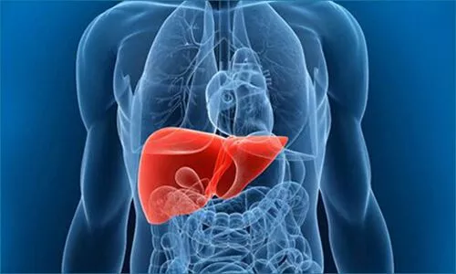

It's all too common to complain regarding stomach aching and other symptoms such as loss of appetite, massive weight loss, flushing, diarrhea and even blood in the stool from months and then for months we ignore it, until it becomes intolerable. Then we go to the ER and get diagnosed with stomach cancer after several tests. Timely treatment could have prevented this condition from becoming life-threatening.
Basically, gastroenterology is a study and medical practice of the regular functioning of small intestines, stomach, esophagus, colon, pancreas and rectum, gallbladder, liver and bile ducts and diseases.
The proper action of the gastrointestinal organs along with the movement of food through the large and small intestines must be understood fully.
Digestion and uptake in the body of nutrients are also included.
The removal of waste products from the body and function of the liver as a digestive organ is studied and tested by gastroenterologists.
Conditions such as colon polyps are detected by gastroesophageal reflux or heartburn.
One should make a visit to our gastroenterologist if he is facing following issues such as:
There are multiple ways available to perform gastroenterology disease diagnosis. The digestive tract consists of all the organs from the mouth to the anus. The origin of the problem can be anywhere inside the body, and hence doctors have to diagnose the problem.
You can consult Digestive Disease Specialists from themedicaltrip. Here our gastroenterologist will help you diagnose your problem early and treat it the right way for optimal health and disease prevention.
The complication rate is only about 1 in 1000 persons and that includes:
When used in infants, the esophagogastroduodenoscopy can squeeze the trachealis muscle which results in narrowing of the trachea. Therefore this can result in reduced airflow in the lungs. Infants may be intubated so that their trachea is fixed open.
Sometimes endoscopy is not able to detect problems of gastrointestinal function. Motion or secretion of the gastrointestinal tract are not easily diagnosed by EGD. Findings such as excess fluid or poor motion of the gut during endoscopy can lead in the disorders of function. Syndrome like Irritable bowel and functional dyspepsia are not easily diagnosed with EGD. But EGD can be helpful in excluding other diseases that lead to these common disorders.